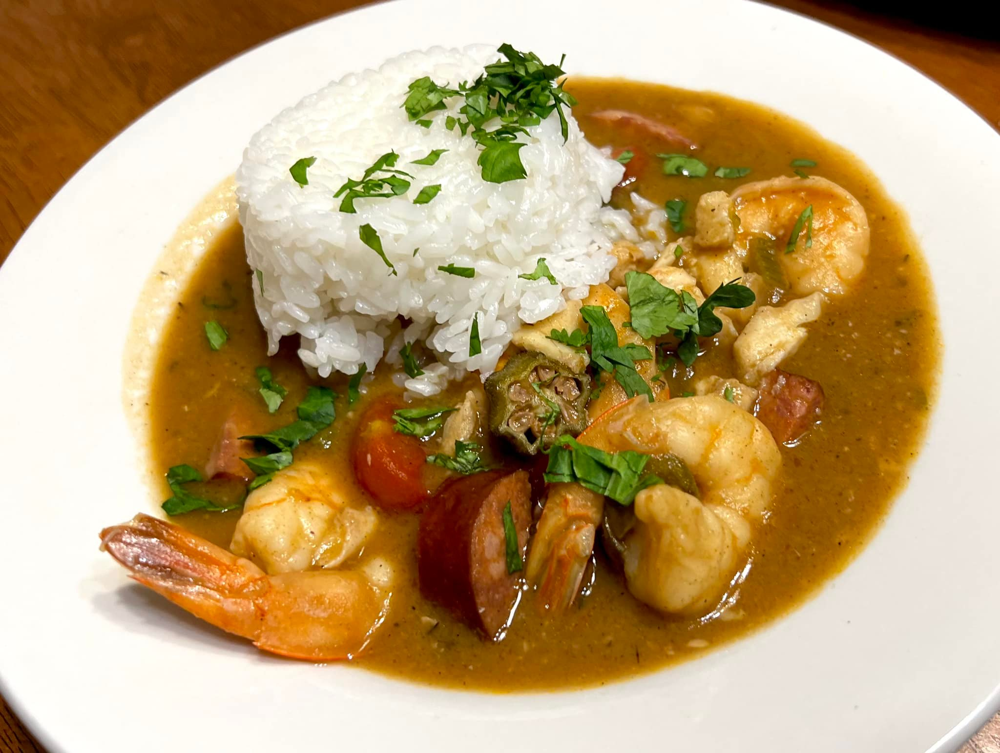

Creole Gumbo

Description
New Orleans-style gumbo is a true taste of Southern tradition. This boldly flavored stew is bursting with fresh, filling ingredients like bell pepper, sausage, stewed tomatoes, and crabmeat. Hot sauce ad Cajun seasonings add a kick that makes this Lousiana dish a favorite amongst our community of home cooks. Learn how to make the best homestyle gumbo right here.
Gumbo is one of the most famous dishes to result from Louisiana's shared Creole-Cajun heritage. Gumbo falls somewhere between a thick stew and a hearty soup and can contain ingredients such as chicken, sausage, ham, seafood, okra, tomatoes, and greens.
Steps
- Place celery, onion, green bell pepper, and garlic into the work bowl of a food processor, and pulse until all vegetables are very finely chopped. Stir vegetables into the roux, and mix in sausage. Bring mixture to a simmer over medium-low heat, and cook until vegetables are tender, 10 to 15 minutes. Remove from heat, and set aside.
- Combine water and beef bouillon cubes in a large Dutch oven or soup pot and bring to a boil over medium-high heat. Stir until bouillon cubes dissolve, then whisk roux mixture into the boiling water.
- Reduce heat to a simmer, and mix in sugar, salt, hot pepper sauce, Cajun seasoning, bay leaves, thyme, stewed tomatoes, and tomato sauce. Simmer soup over low heat for 1 hour; mix in 2 teaspoons of file gumbo powder at the 45-minute mark.
- Meanwhile, melt 2 tablespoons bacon drippings in a skillet over medium heat. Add okra and vinegar and cook for 15 minutes; remove okra with a slotted spoon, and stir into the simmering gumbo.
- Mix in crabmeat, shrimp, and Worcestershire sauce, and simmer until flavors have blended, 45 more minutes. Stir in 2 more teaspoons of file gumbo powder just before serving.